#install.packages("patchwork")
library(tidyverse)
library(patchwork)Combinar gráficos con Patchwork
La gramática presentada en ggplot2 se centra en crear gráficos individuales. Sin embargo, en ocasiones es necesario combinar múltiples gráficos en una sola visualización para facilitar la comparación y el análisis. Por supuesto que es posible hacer esto en algún programa de edición de imágenes, pero hacerlo directamente en R puede ser mucho más eficiente y reproducible.
El paquete patchwork en R proporciona una forma sencilla y flexible de combinar gráficos creados con ggplot2. Pathchwork permite organizar múltiples gráficos lado a lado o colocar un gráfico dentro de otro (inlets). Para fines de este curso, nos enfocaremos solamente en la primera funcionalidad.
Colocar gráficos lado a lado.
Primero instalaremos y cargaremos el paquete patchwork. También necesitaremos Tidyvese
La forma mas simple de usar patchwork es simplemente usar el operador + para combinar dos o más gráficos. Aquí hay un ejemplo básico usando la base de datos de pingüinos de Palmer:
pinguinos <- read_csv("data/palmer_penguins.csv") %>%
drop_na()
# dispersión de masa corporal vs longitud de aleta
p1 <- ggplot(pinguinos)+
geom_point(aes(x=flipper_length_mm, y=body_mass_g, color=species))+
labs(x = "Longitud de aleta (mm)",
y = "Masa corporal (g)",
color = "Especie")
# dispersion de largo de pico vs profundidad de pico
p2 <- ggplot(pinguinos)+
geom_point(aes(x=bill_length_mm, y=bill_depth_mm, color=species))+
labs(x = "Longitud de pico (mm)",
y = "Profundidad de pico (mm)",
color = "Especie")
# gráfico de densidades de la masa corporal por especie
p3 <- ggplot(pinguinos)+
geom_density(aes(x=body_mass_g, fill=species), alpha=0.5)+
labs(x = "Masa corporal (g)",
y = "Densidad",
fill = "Especie")
# gráfico de barras de proporcion de sesos por especie
p4 <- ggplot(pinguinos)+
geom_bar(aes(x = species, fill = sex), position = "fill")+
labs(x = "Especie",
y = "Proporción",
fill = "Sexo")Ahora podemos combinar estos gráficos usando el operador +:
p1 + p2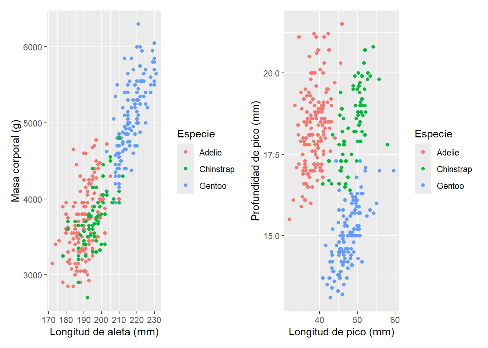
El operador + no especifica ningún tipo de disposición (layout), solamente que los gráficos tienen que estar juntos. En la ausencia de una disposición definida, el comportamiento por defecto es similar a la función facet_wrap()el cual decide automáticamente el número de filas y columnas.
Si usamos tres gráfica patchwork lo acomodará en una disposición de 1 x 3:
p1 + p2 + p3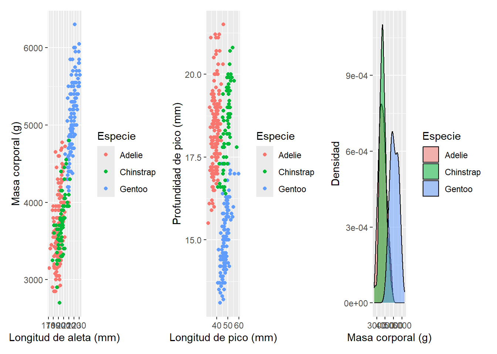
Si usamos cuatro gráficos patchwork lo acomodará en una disposición de 2 x 2:
p1 + p2 + p3 + p4
Mayor control en el layout
Podemos tener mayor control sobre el layout usando los operadores / y | para especificar filas y columnas, respectivamente. Por ejemplo, si queremos que p1 y p2 este uno abajo del otro podemos usar el operador /:
p1 / p2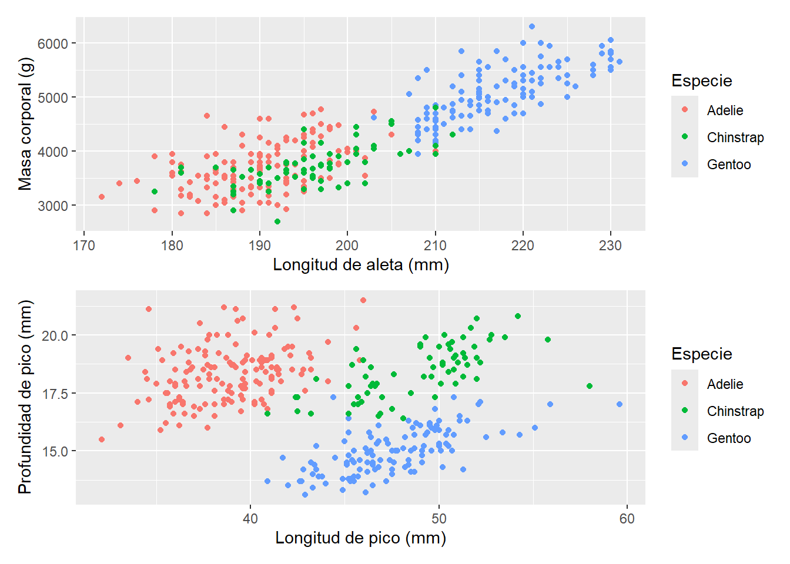
Por el contrario, si utilizamos el operador | los gráficos se colocarán uno al lado del otro de manera equivalente a usar el operador +:
p1 | p2
De esta manera, podemos usar ambos operadores para hacer arreglos mas complejos:
(p1 | p2) / (p3 | p4)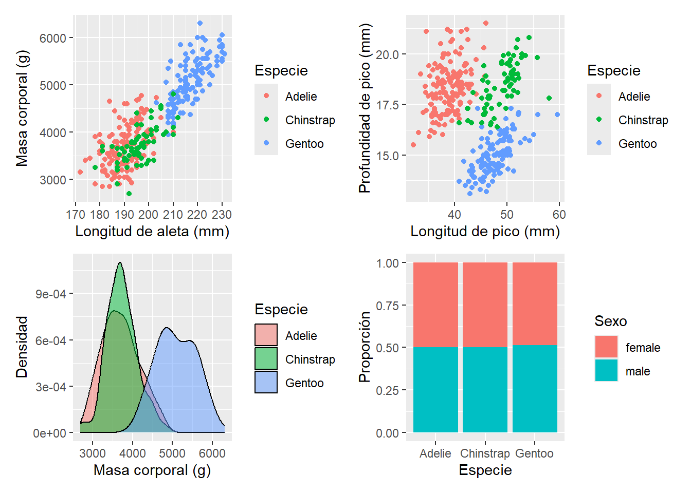
o como por ejemplo:
p1 / (p2 + p3 + p4)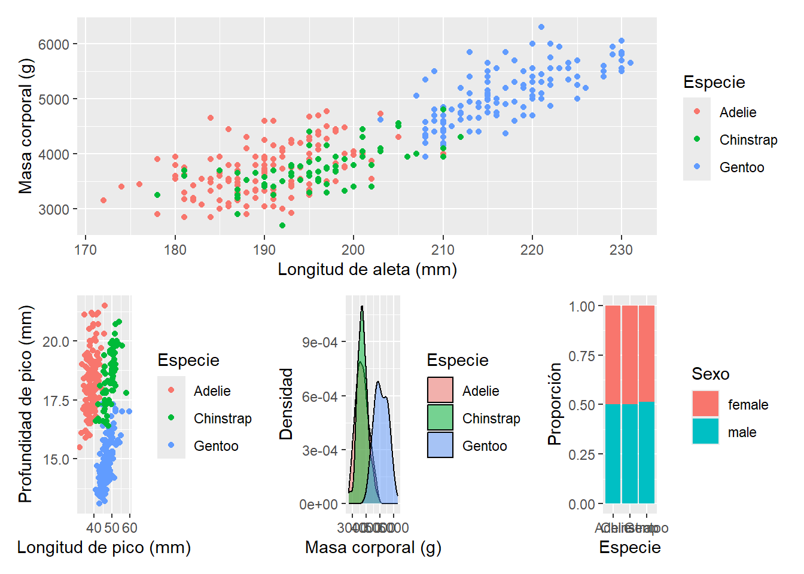
Hasta el momento, cada gráfico en el arreglo muestra su propia leyenda, la cual puede ser redundante en algunos casos. Por ejemplo, consideremos p1 y p2:
p1 + p2
En estos casos, podemos eliminar la leyenda de p2 usando el argumento guides dentro de la función theme(). Sin embargo, patchwork también proporciona una forma sencilla de compartir leyendas entre gráficos usando la función plot_layout() y el argumento guides = "collect"
p1 + p2 + plot_layout(guides = "collect")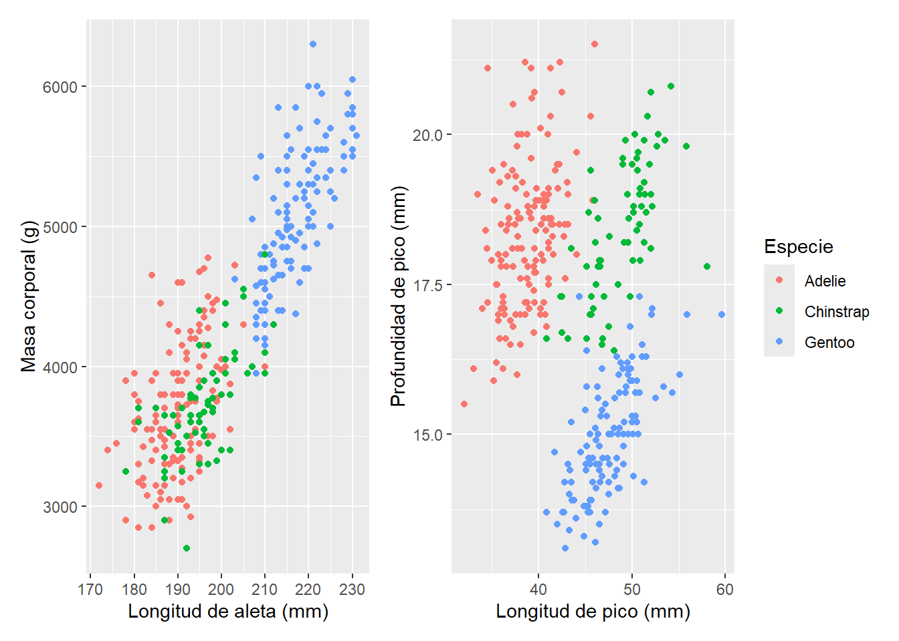
Este argumento colectará todas las guías y las pondrá juntas en la posición de acuerdo al tema (theme) global. Además, eliminará cualquier guía duplicada dejando solamente las únicas de acuerdo al tipo de geometría que se este usando.
p1 + p2 + p3 + p4 + plot_layout(guides = "collect")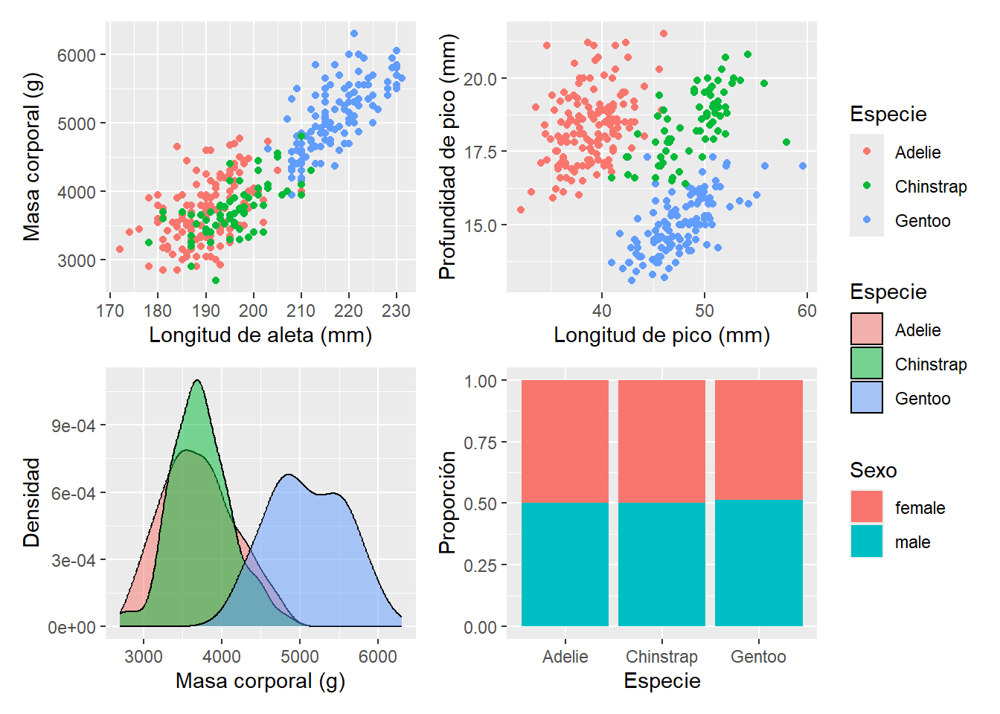
p1 + p2 + (p3 + theme(legend.position = "none")) + p4 + plot_layout(guides = "collect")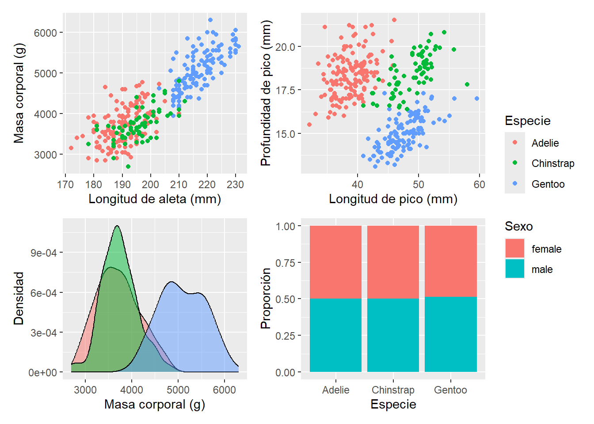
Ajustar parámetros globales
En ocasiones es necesario modificar todos los gráficos en el arreglo al mismo tiempo. Por ejemplo, ajustar un mismo theme a todos.
Para estos situaciones, patchwork utiliza el operador &
p1 + p2 & theme_minimal()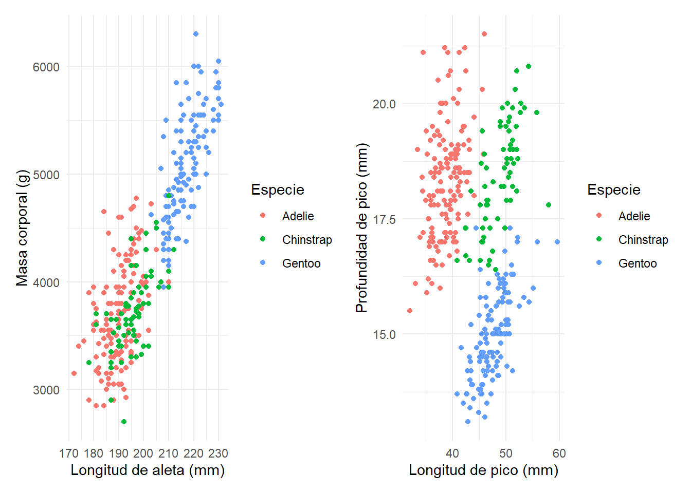
Con esto también es posible ajustar otros parámetros como escala de colores, tamaños de texto, ejes, etc.
colores <- c("tomato", "lightblue", "lightgreen")
p1 + p2 & scale_color_manual(values = colores) &
theme_minimal() 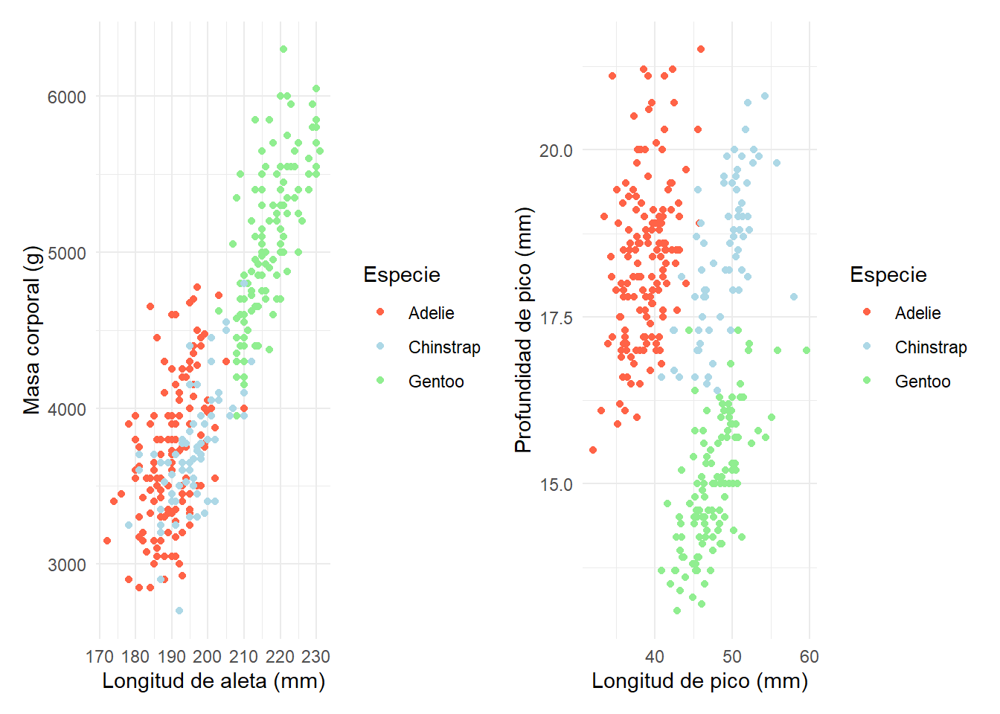
Añadir anotaciones
Una vez que todos los gráficos se han ensamblado, estos forman una sola unidad. Esto significa que los títulos, subtítulos y otras anotaciones pueden ser añadidos a todo el conjunto usando la función plot_annotation()
# modificar las etiquetas en la leyenda de p4
p4 <- p4 +
scale_fill_discrete(labels = c("hembra", "macho"))
p124 <- p1 / (p2 + p4) + plot_layout(guides = "collect")
p124 <- p124 + plot_annotation(
title = "Pingüinos de Palmer",
subtitle = "Comparación entre especies",
caption = "Datos: Palmer Archipelago (Antarctica) penguin data"
)
p124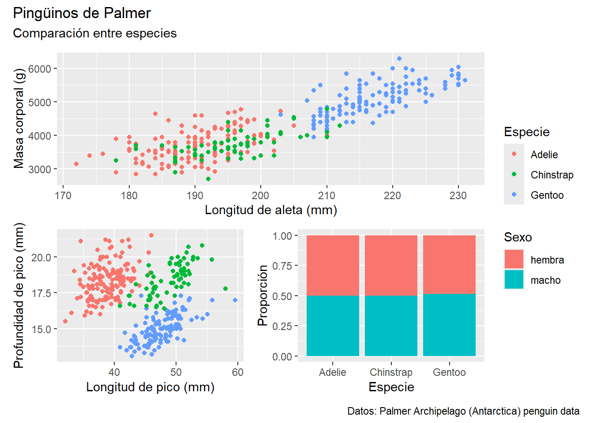
Otro tipo de anotación que es especialmente relevante en la literatura científica es agregar una etiqueta a cada subplot para identificarlas en el texto o en el pie de figura.
Para esto se puede utilizar el argumento tag_levels:
p124 <- p124 + plot_annotation(tag_levels = "A", tag_suffix = ")")
p124 <- p124 &
theme_classic()
p124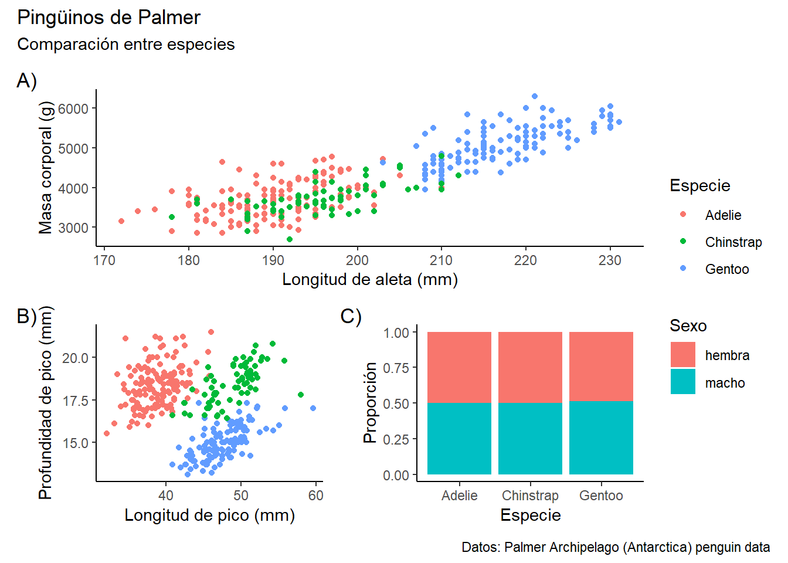